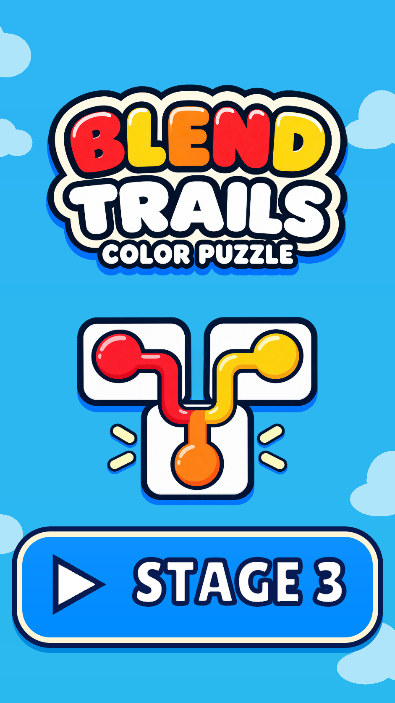
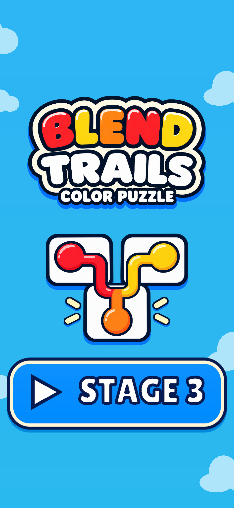
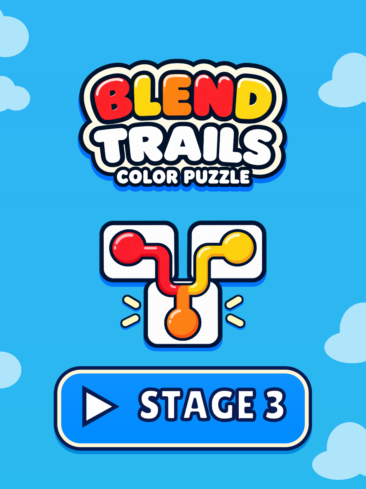
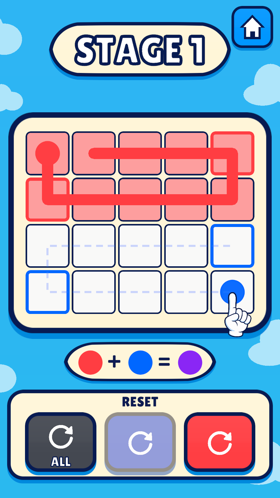
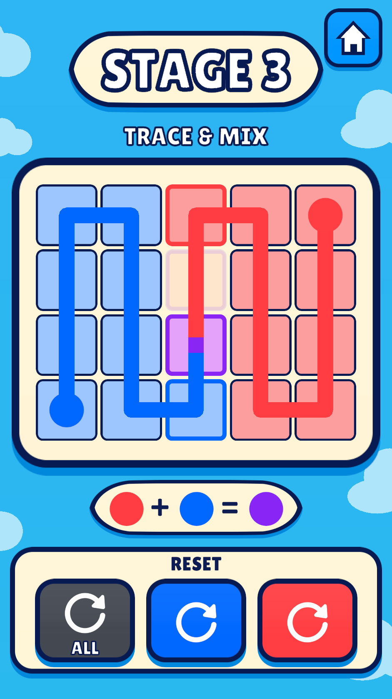
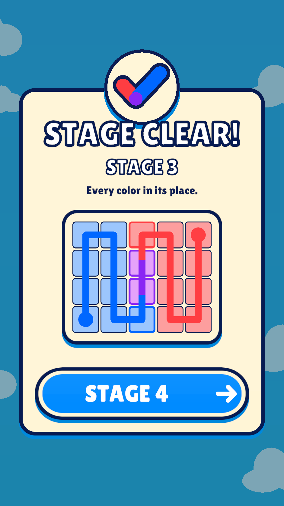

タイトル・通常比率
空と雲は全画面で一続き。ロゴと混色イラストは背景透過素材。

タイトル・縦長比率
941×2039。縦横比が変わっても背景の境界線を出さない。

タイトル・タブレット比率
1254×1672。イラストの縦横比を保ち、共通背景が画面全体へ追従。

青チュートリアル
赤ラインを離してから実測0.49秒で青ガイドを開始。

新しいリセット矢印
生成した透過PNGを3ボタンで共用。小さい表示に合わせてインポート設定と大きさを調整。

STAGE CLEAR!・拡大時
文字の倍率：103.6%。文字だけをループで拡大縮小。
STAGE CLEAR!・縮小時
文字の倍率：96.5%。ボタン操作と完成盤面はそのまま。

生成した矢印の透過素材
背景透過PNG。白い矢印をボタン上で使用し、黄色のボタンでは濃紺へ着色。
画像生成プロンプト